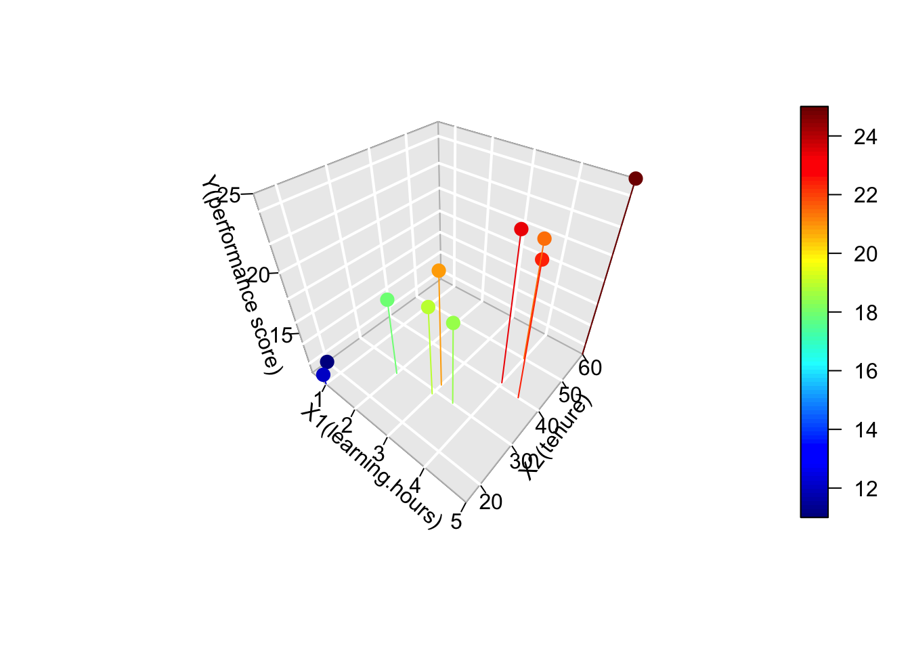
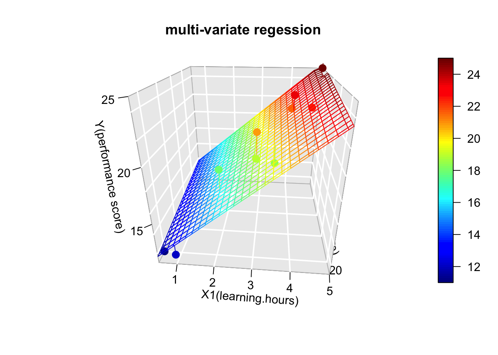
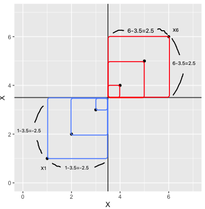
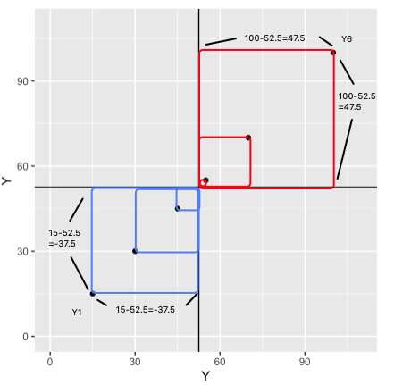
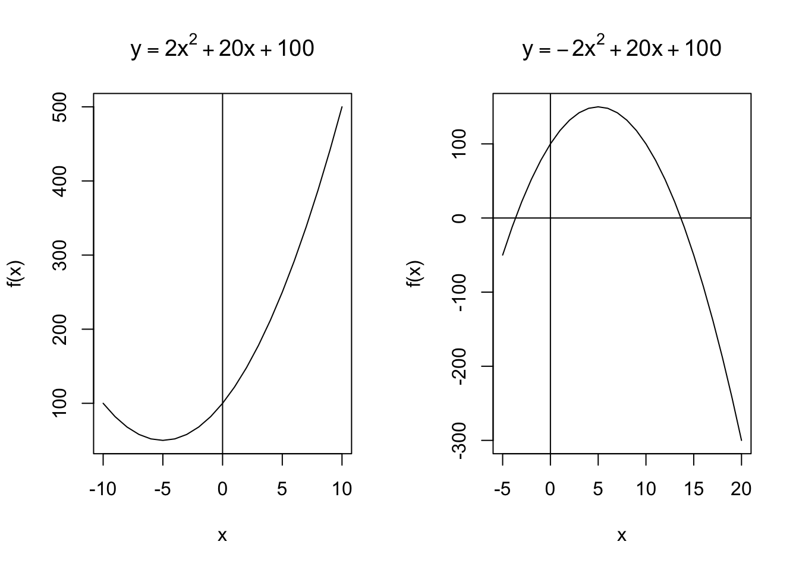
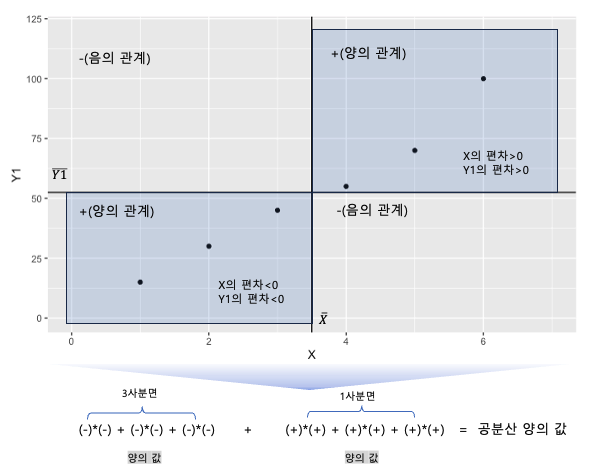
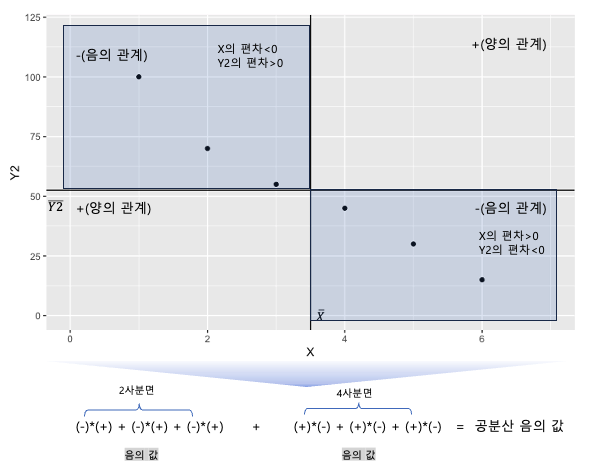
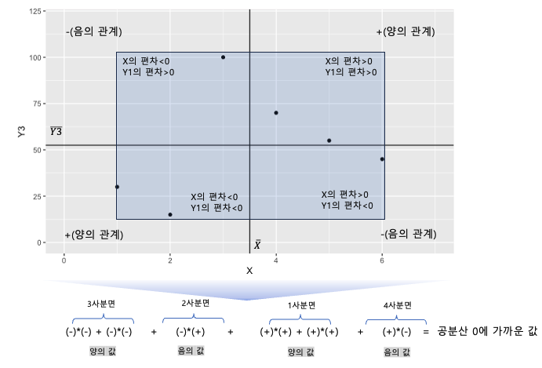
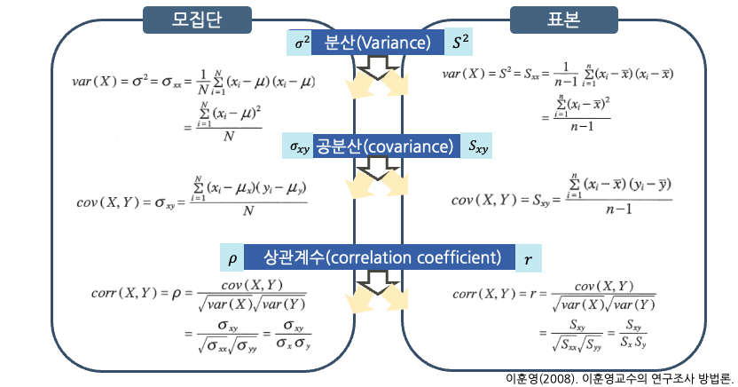
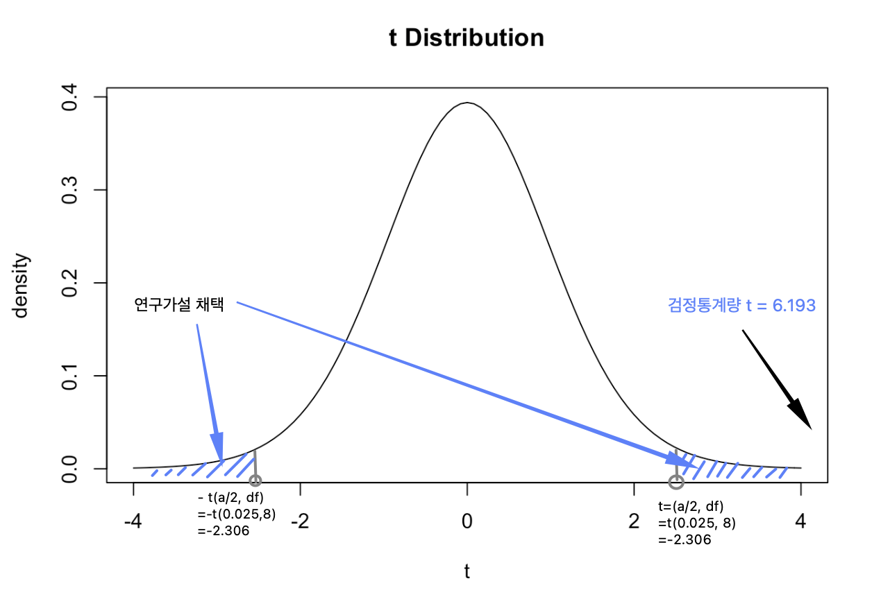

Chapter 7 분산, 공분산 그리고 상관
두 변수의 관계 + 관련 가설들 + 변수의 척도에 따른 두 변수의 관계
- 분산과 공분산
- 분산의 의미
- 두 변수의 분산, 공분산
- 상관계수
- 공분산의 한계
- 공분산의 표준화
- 상관계수의 해석
7.1 두 변수의 관계
7.1.1 관련 가설들
사회과학분야의 상당한 연구들은 두 변수들의 관계를 구명하는데 관심이 있다. 지능이 높으면 행복할까?, 돈이 많은면 결혼생활 만족도가 높을까?, 공부하는 시간이 많으면 시험성적이 높을까? 산업인력개발분야에서도 비슷한 연구질문들이 많다. 상사의 리더십에 긍정적으로 반응하는 사람일수록 직무수행이 우수할까? 임금에 만족하는 사람일수록 주관적 경력성공의 수준이 높을까?
통상 이러한 가설에 포함된 변수들은 일종의 방향이 있다. 다시 말해 낮은 점수에서 높은 점수로의 방향성이 있다. 또한 대부분 리커트 척도(1점~5점 또는 1점 ~ 7점)로 측정되었기 때문에 등간척도(interval scale)이다. 1점과 2점, 2점과 3점 사이의 간격이 동일하므로 덧셈, 뺄셈이 가능하다.
이러한 척도로 측정된 두개의 변수의 관계는 보통 산점도(scatter plot)을 그려보면 직관적으로 확인이 가능하다.
[왼: 증가하는 그래프], [오: 감소하는 그래픔]
왼쪽의 그래프는 상사의 리더십과 직무수행 점수를 나타낸다. 상사의 리더십에 긍정적으로 반응하는 사람일수록 직무수행 점수가 높다. 오른쪽의 그래프는 부적인 관계를 나타낸다. 직무만족도가 높을 수록 이직 의도가 낮아진다.
7.1.2 변수의 척도에 따른 두 변수의 관계
이러한 두 변수의 관계는 변수를 측정하는 척도(scale)에 따라 제한적이다. 다시 말해 두 변수가 모두 등간척도(interval scale)이상이어야 한다. 한 변수의 증가폭과 다른 변수의 증가폭이 계산 가능해야 하기 때문이다.
만일 한쪽이 이분변수(성별), 나머지는 연속변수(직무수행점수)라고 생각해보자. X 축에 성별을 두고 Y축에 직무수행 점수를 두었을때 산점도를 그릴수 없다.
두 변수 모두 범주변수일때도 마찬가지이다. X축에 성별, Y축에 리더십 유형(합리적 리더십, 성과지향 리더십, 친화적 리더십)을 두고 산점도를 그려보자. 산점도에 의미가 있는가? 산점도는 두 변수 모두 연속형이면서 등간척도일때만 그릴 수 있다.
따라서 변수의 척도에 따라 두 변수의 관계를 구명하는 방식은 다음과 같이 정리할 수 있다.
- 두 변수가 모두 등간척도 일때 : 피어슨 상관분석
- 한 변수가 범주변수, 나머지 변수가 등간척도일때 :
- 이분변수-등간척도 일때 : t-test
- 3집단 이상의 범주변수-등간척도 일때 : ANOVA(분산분석)
- 두 변수 모두 범주변수 일때 : 교차분석(cross tabulation)
7.2 분산과 공분산
상관분석을 이해하기 위해서는 먼저 분산(variance)과 공분산(covariance)를 이해해야한다.
7.2.1 분산의 의미
7.2.1.1 분산의 공식
분산은 평균에서 떨어진 정도로 정의할 수 있다. 분산의 공식은 (7.1)과 같다.
\[\begin{equation}
\begin{split}
var(X) & =\sigma^2=\sigma_{xx}=\frac{1}{N}\sum_{i=1}^{N}(X_{i}-\mu)(X_{i}-\mu)\\
& =\frac{\sum_{i=1}^{N}(X_{i}-\mu)^2}{N}\\
\end{split}
\tag{7.1}
\end{equation}\]
가상의 데이터를 활용하여 분산(\(\sigma^2\))의 공식을 이해해보자. n=6인 data set ={1, 2, 3, 4, 5, 6}이 있다고 가정하자. 분산은 평균에서 떨어진 정도이기 때문에 평균을 먼저 구해야한다.
\[\bar{X}=(1+2+3+4+5+6)/6=3.5\]
6개의 데이터가 평균에서 떨어진 정도를 확인하기 위해서, 각각의 데이터와 평균의 차이(difference)를 계산한다. 이때 이 차이를 편차라고 부른다 6개의 편차가 확인되면, 제곱하여 모두 합한다. 제곱을 하지 않는다면 이 차이들의 합은 모두 0이기 때문에 부호를 없애주는 작업이다. 편차제곱합을 분자로 두고, 분모를 데이터의 갯수(n)으로 두면 이것이 바로 분산이다.
\[\sigma^2= \frac{(1-3.5)^2+(2-3.5)^2+(3-3.5)^2+(4-3.5)^2+(5-3.5)^2+(6-3.5)^2}{6}=2.917\]
7.2.1.2 시각적으로 이해하는 분산
공분산을 이해하기 위해 분산을 시각적으로 이해해보자. 앞서 살펴본 6개의 데이터를 갖고 있는 X를 자격증 수로 가정해보자. 이와 함께 또 하나의 변수 Y(직무수행점수)를 가정해보자. Y는 {15, 30, 45, 55, 70, 100}이라고 가정하자. 예를 들어 첫번째 사례(사람)은 자격증 수(X)는 1개이고, 직무수행점수는 15점이다.




위의 두 그래프에서 볼 수 있듯이 분산의 기본은 편차의 제곱, 다시 말해 편차*편차이므로 총 6개의 사각형의 넓이가 만들어진다. 사각형의 넓이의 합이 클수록 분산이 커진다. 또한 분산에서는 1사분면과 3사분면에만 편차제곱, 즉 사각형이 만들어진다는 점을 염두해 두자. Y의 분산은 907.5로 X보다 분산이 크다. 이것은 두 가지에서 기인하는데 1)실제로 Y의 자료들이 평균에서 떨어진 정도가 크고, 2)Y의 척도(scale)이 0~100이므로 X의 척도보다 크기 때문이다. 따라서 분산값은 서로 다른 척도를 가진 자료들을 비교하는데는 적절하지 않다.
7.2.2 두 변수의 분산, 공분산
공분산은 이름에서 추측할 수 있듯이 서로다른 두개의 변수의 공통된 분포를 나타내는 분산이다. 공분산의 공식은 (7.2)과 같다. (7.1)와 비교해보면 \((X_{i}-\mu)*(X_{i}-\mu)\) 대신에 \((X_{i}-\mu_{x})*(Y_{i}-\mu_{y})\)로 바뀐것을 볼 수 있다. 다시 말해 X의 편차 제곱이 X 편차*Y편차로 바뀐 것이다
\[\begin{equation} \begin{split} Cov(X,Y) & =\sigma_{xy}\\ & =\frac{1}{N}\sum_{i=1}^{N}(X_{i}-\mu_{x})(Y_{i}-\mu_{y})\\ \end{split} \tag{7.2} \end{equation}\]
## X Y1 Y2 Y3
## 1 1 15 100 30
## 2 2 30 70 15
## 3 3 45 55 100
## 4 4 55 45 70
## 5 5 70 30 55
## 6 6 100 15 45





7.3 상관계수
7.3.1 공분산의 한계
앞서 살펴본 바와 같이 공분산의 부호는 두 변수의 관계를 알려준다. 양의 부호인 경우에는 정적인 관계를, 음의 부호인 경우에는 부적인 관계를 갖는다. 공분산의 절대값 역시 정보를 갖고 있다. 0에 가까울수록 두 변수의 관계가 거의 없는 것을 알 수 있다. 그러나 공분산의 절대값 만으로 두 변수간의 관계가 강하다, 약하다 등의 결론을 내릴 수는 없다. 그 이유는 분산의 특징에서 기인한다. 분산과 공분산 모두 변수의 척도에 민감하게 영향을 받기 때문이다. 만일 0~5로 측정한 두 변수의 공분산과, 0~100으로 측정한 두 변수의 공분산을 비교하다고 가정하자. 아마도 높은 확률로 0~100으로 측정한 두 변수의 공분산이 크다. 척도의 범주가 더 크기 때문에 편차가 더 크기 때문이다.
따라서 공분산은 척도가 다른 변수들의 관계들을 비교하기가 어렵다.
7.3.2 공분산의 표준화=상관계수
공분산이 척도에 민감하게 반응하는 문제를 해결하기 위해서는 표준화(standardization)가 필요하다. 표준화는 두 변수의 공분산을 각각의 변수의 표준편차로 나누는 방식을 취한다. 상관계수의 공식은 (7.3)과 같다.
\[\begin{equation} \begin{split} corr(X,Y) & =\rho=\frac{cov(X,Y)}{\sqrt{var(X)}\sqrt{var(Y)}}\\ & =\frac{\sigma_{XY}}{\sqrt{\sigma_{xy}}\sqrt{\sigma_{xy}}}\\ & =\frac{\sigma_{xy}}{\sigma_{x}\sigma_{y}} \end{split} \tag{7.3} \end{equation}\]
지금까지의 분산, 공분산, 상관계수의 공식은 모집단에 대한 공식이다. 이를 표본에서 추정하기 위해서는 분모가 N이 아닌 n-1로 바뀌고, 분산, 공분산, 상관계수의 기호도 \(S^2\), \(S_{xy}\), \(r\)로 바뀌는 것에 유의하자.

7.3.3 상관계수의 해석
두 변수의 공분산을 표준화한 상관계수(r)는 공분산의 크기와 두 변수의 표준편차에 의해 결정된다. 부호는 공분산의 부호와 같다. 또한 -1에서 1 사이의 값을 갖게 된다. 상관계수의 특징은 다음과 같다.
- 상관계수의 범위 : \(-1 \le r \le 1\)
- 변수에 일정하게 0이 아닌 상수를 더하거거나, 양의 상수를 곱하더라도 상관계수의 값은 변하지 않음
- 음의 상수를 한 변수에 곱하면 상관계수의 부호만 바뀜
- 음의 상수를 두 변수에 곱하면 상관계수는 변하지 않음
상관계수의 장점은 두 변수의 관계를 수량화하여 비교하고, 관계의 정도를 일정하게 판단할 수 있다는데 있다. 주로 사회과학분야에서 상관계수를 해석하는 기준은 다음과 같다.
- \(|r| \le 0.2\) : 관계가 거의 없음
- \(0.2\le |r| \le 0.4\) : 낮은 상관관계
- \(0.4\le |r| \le 0.6\) : 비교적 높은 상관관계
- \(0.6\le |r| \le 0.8\) : 높은 상관관계
- \(0.8\le |r| \le 1.0\) : 매우 높은 상관관계
7.3.4 상관계수 추정 및 유의성 검정
실제 데이터를 활용하여 상관계수를 계산해보고 유의성을 검정해보도록 하자. X는 자격증 갯수, Y는 직무수행 점수라고 가정하다. 개인이 갖고 있는 자격증 갯수와 직무수행점수와 유의미한 관계가 있는지 알고 싶다. 이때 연구가설과 영가설은 다음과 같다.
영가설(H0) : 자격증갯수(X)와 직무수행점수(Y)는 선형관계가 없다. (또는 상관계수가 0이다) 연구가설(H1) : 자격증갯수(X)와 직무수행점수(Y)는 선형관계가 있다. (또는 상관계수가 0이 아니다)
연구가설이 유의수준(\(\alpha\)) 0.05에서 유의한지를 확인하려고 한다.
7.3.4.1 손으로 풀어보는 상관계수 검정
다음의 10개 데이터를 활용하여 상관계수 r을 추정하려면, X의 편차(\(X-\mu_{x}\))와 편차 제곱(\((X-\mu_{x})^2\)), Y의 편차(\(Y-\mu_{y}\))와 편차제곱(\((Y-\mu_{y})^2\)), 그리고 X편차와 y편차의 곱(\((X-\mu_{x})(Y-\mu_{y})\))을 각 사례별로 모두 계산한다.
| ID | X | Y | X 편차 | X 편차제곱 | Y 편차 | Y 편차 제곱 | X 편차*Y 편차 |
|---|---|---|---|---|---|---|---|
| 1 | 1 | 15 | -2.3 | 5.29 | -39.5 | 1560.25 | 90.85 |
| 2 | 1 | 30 | -2.3 | 5.29 | -24.5 | 600.25 | 56.35 |
| 3 | 2 | 45 | -1.3 | 1.69 | -9.5 | 90.25 | 12.35 |
| 4 | 3 | 40 | -0.3 | 0.09 | -14.5 | 210.25 | 4.35 |
| 5 | 3 | 50 | -0.3 | 0.09 | -4.5 | 20.25 | 1.35 |
| 6 | 2 | 55 | -1.3 | 1.69 | 0.5 | 0.25 | -0.65 |
| 7 | 4 | 60 | 0.7 | 0.49 | 5.5 | 30.25 | 3.85 |
| 8 | 5 | 70 | 1.7 | 2.89 | 15.5 | 240.25 | 26.35 |
| 9 | 5 | 80 | 1.7 | 2.89 | 25.5 | 650.25 | 43.35 |
| 10 | 7 | 100 | 3.7 | 13.69 | 45.5 | 2070.25 | 168.35 |
| mean | 3.3 | 54.5 | sum | 34.1 | sum | 5472.5 | 406.5 |
상관계수 r의 공식에 따라 아래의 식처럼 계산이 가능하다. 분자와 분모의 (n-1)은 소거됨을 확인하다. 그 결과 자격증 갯수(X)와 직무수행점수(Y)의 상관계수(r)은 0.94로 매우 높은 정적인 상관이 있는 것으로 나타났다.
\[r=\frac{S_{xy}}{S_xS_y}=\frac{\frac{\sum_{i=1}^{n}(x_i-\bar{x})(y_i-\bar{y})}{(n-1)}}{\frac{\sqrt{\sum_{i=1}^{n}(x_i-\bar{x})^2\sum_{i=1}^{n}(y_i-\bar{y})^2}}{n-1}}=\frac{406.5}{\sqrt{34.1*5472.5}}= \frac{406.5}{\sqrt{186612.25}}=0.94\]
연구가설이 채택되기 위해서는 r의 유의성이 검증되어야 한다. 상관계수 r의 검정통계량 t의 공식은 다음과 같다. t분포의 자유도(df)는 n-2로, 이 사례에서는 10-2=8이다.
\[t=r\sqrt{\frac{n-2}{1-r^2}}= 0.94*(\sqrt{\frac{8}{1-(0.94)^2}}=0.94*8.290=7.7926\]

위의 그림은 자유도(df) 8의 t분포표이다. 유의확률 0.05는 양측검정시 0.025이므로, 이때 임계치는 +2.306, -2.306이다(t-table 참조). 검정통계량은 임계치의 절대값을 한참 상회하는 7.7926이므로 상관계수 r은 유의하다. 따라서 연구가설(H1: 개인의 자격증 갯수와 직무수행점수의 상관계수는 0이 아니다)를 채택하게 된다.7.3.4.2 R을 활용한 상관계수 검정
데이터 셋이 있는 경우에 R을 활용하여 상관계수를 검정하는것은 매우 쉽다. cor.test(데이터프레임\(변수1, 데이터프레임\)변수2)
X<-c(1, 1, 2, 3, 3, 2, 4, 5, 5, 7)
Y<-c(15, 30, 45, 40, 50, 55, 60, 70, 80, 100)
correlation <-data.frame(X, Y)
cor.test(correlation$X, correlation$Y)
##
## Pearson's product-moment correlation
##
## data: correlation$X and correlation$Y
## t = 7.8651, df = 8, p-value = 4.935e-05
## alternative hypothesis: true correlation is not equal to 0
## 95 percent confidence interval:
## 0.7640734 0.9862784
## sample estimates:
## cor
## 0.9410018